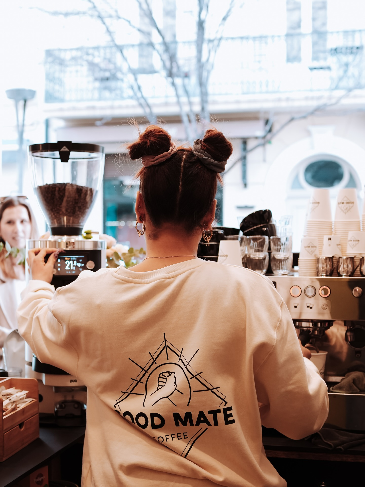
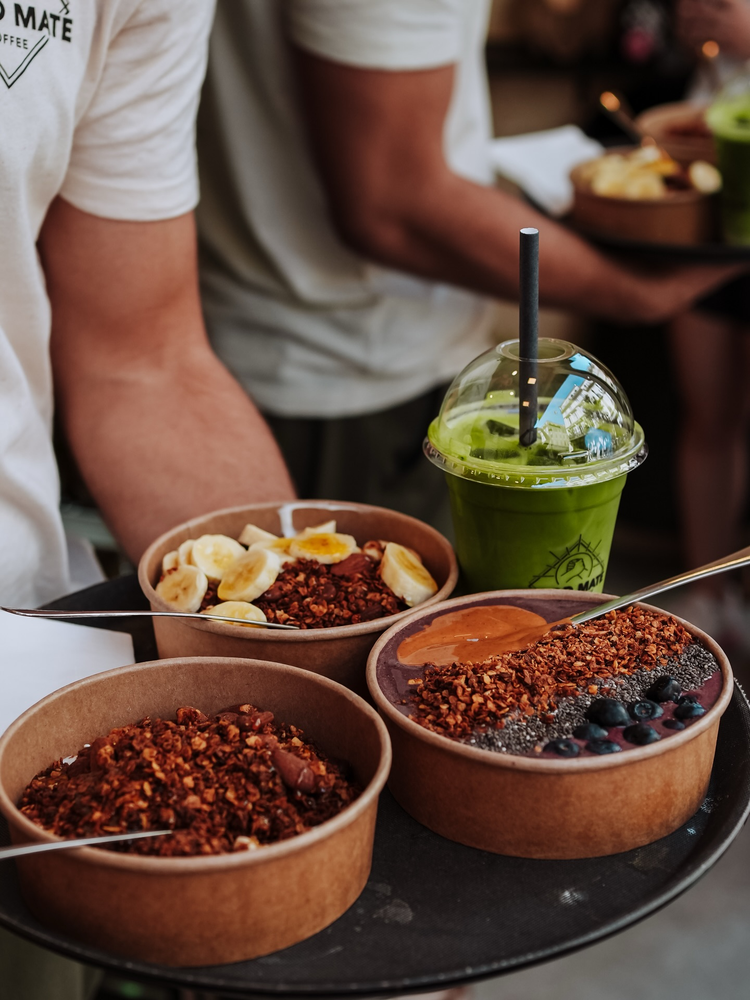
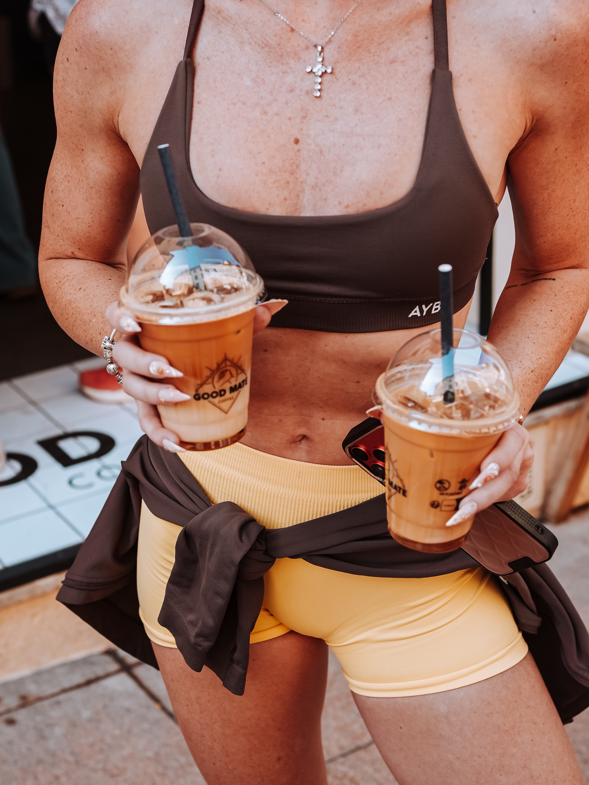

Good coffee.
Good mood.
Café de spécialité 100 % bio, iced latte qui rafraîchit et douceur à partager. Votre pause préférée, au cœur du vieil Antibes.
ou à emporter

MATE2023

GOOD MATE · 06Vieilles ruelles.
Nouveaux rituels.
Au détour de la rue Georges Clemenceau, Good Mate Coffee est là pour les matins pressés, les balades qui s’éternisent et les pauses qu’on n’avait pas prévues.
On vous prépare un bon café, on vous laisse choisir votre lait, et on vous accueille avec le sourire. Le reste, c’est Antibes.
Un peu plus de Good Mate sur InstagramMATEEST. ANTIBES
Run together.
Coffee after.
Le Good Mate Run Club fait partie de la communauté. Pour connaître les prochains rendez-vous et les infos pratiques, suivez-nous sur Instagram.
Rejoindre la communautéDes mates
convaincus.
“Le latte banane au lait d’avoine, un régal ! Je viens depuis trois ans et je ne suis jamais déçue.
“Très bonnes boissons, équipe adorable. Le genre d’adresse où l’on revient pendant tout le séjour.
✳La pause préférée des gens du coin comme des voyageurs de passage.
Lire les avis
Extraits d’avis Google publics, reproduits à titre indicatif.
On garde
une place pour vous.
Au coin de la rue Georges Clemenceau et de la rue Isnard, à deux pas du marché provençal.
ENERGY
